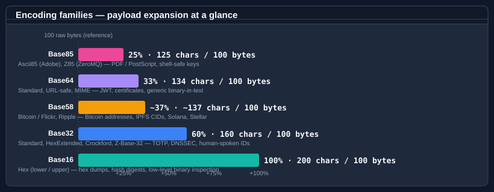

Bodu.Text.Encoding

Bodu.Text.Encoding is a focused, allocation-conscious library of binary-to-text encodings. The five core radix
encodings that .NET applications reach for — Base16, Base32, Base64, Base58, and Base85 — each
carry the same modern API shape: span- and UTF-8-friendly overloads, OperationStatus-returning streaming methods,
length-prediction helpers, validation predicates, and a unified IBinaryEncoding interface that lets code select an
encoding at runtime. Three special-purpose encodings sit alongside them — Base45 (RFC 9285, QR-code payloads),
Base62 (compact identifiers), and Bech32 / Bech32m (BIP 173 / 350, checksummed addresses) — plus the
convenience wrappers Base58Check and Base64Url.
Part of the Text & Serialization topic.
It fills two gaps that System.Convert and System.Buffers.Text.Base64 leave open:
- Variants the BCL does not cover — base32hex, Crockford Base32, z-base-32, Base58 (Bitcoin / Flickr / Ripple), Ascii85, Z85, Base45, Base62, Bech32 / Bech32m.
- Lenient parsing and formatting decoration —
0xprefix tolerance, whitespace stripping, byte spacing, line breaks every 64 / 76 characters — for the encodings that benefit from them.
Core mental model

Every encoding in the library follows the same four-stage pipeline. Encoding takes raw binary bytes, runs the radix conversion (bit-stream pack for Base16 / Base32 / Base64, big-integer divmod for Base58, 4-byte block packing for Base85), applies the variant-specific transform (alphabet swap, padding, shortcut), and optionally adds decorations (case folding, prefix, byte spacing, line breaks). Decoding is the same path in reverse — strip decoration, apply alphabet lookup, then bit-stream unpack / divmod / block expansion.
Where each encoding fits

| Encoding | Bits per symbol | Payload expansion | Typical use cases |
|---|---|---|---|
| Base16 | 4 | 100 % | Hex dumps, hash digests, low-level binary inspection |
| Base32 | 5 | 60 % | TOTP / HOTP secrets, DNSSEC NSEC3, S/MIME, human-spoken IDs (Crockford / z-base-32) |
| Base64 | 6 | 33 % | MIME / SMTP, JWT (URL-safe), TLS certificates, generic binary-in-text |
| Base58 | ≈5.86 | ≈37 % | Bitcoin addresses, IPFS CIDs, Solana, NEAR, Stellar, Flickr short URLs |
| Base85 | ≈6.41 | 25 % | PDF / PostScript (Ascii85), ZeroMQ keys (Z85), tight ASCII transport |
| Base45 | ≈5.49 | 50 % (2 bytes → 3 chars) | QR-code payloads (RFC 9285), EU Digital COVID Certificate |
| Base62 | ≈5.95 | ≈35 % | Short URLs, compact identifiers, URL-safe slugs (no special characters) |
| Bech32 / Bech32m | 5 (+ HRP + checksum) | base-32 data + 6-symbol checksum | Bitcoin SegWit addresses, Lightning invoices (BIP 173 / 350) |
A shared shape
Every core encoding type (Base16, Base32, Base64, Base58, Base85) exposes the same public surface:
| Member group | Methods |
|---|---|
| Encode | Encode(byte[]/span), Encode(byte[], int, int), Encode(span, span), TryEncode(span, span, out int) |
| Decode | Decode(string), Decode(char[], int, int), Decode(span), TryDecode(span, span, out int) |
| BCL-style aliases | ToBase{N}String(...), FromBase{N}String(...), TryToBase{N}String(...) |
| UTF-8 path | EncodeToUtf8(span), TryEncodeToUtf8(span, span, out int), DecodeFromUtf8(span, span, out int, out int) returning OperationStatus |
| Streaming decode | FromBase{N}String(span char/byte, span byte, out int, out int) returning OperationStatus |
| Sizing | GetEncodedLength(int), GetMaxDecodedLength(int), GetDecodedLength(span), TryGetDecodedLength(span, out int) — variable-ratio encodings (Base58, Base85) expose GetMaxEncodedLength(int) in place of the exact GetEncodedLength / GetDecodedLength / TryGetDecodedLength forms |
| Validation | IsValid(span), IsBase{N}Digit(char) |
For runtime-selected encoding choice, see the IBinaryEncoding interface and the
BinaryEncodings registry: BinaryEncodings.Base64, BinaryEncodings.Base32Crockford,
BinaryEncodings.Z85, etc.

The special-purpose encodings (Base45, Base62, Bech32) share the Encode / Decode / TryEncode / TryDecode,
sizing, and IsValid members but omit the OperationStatus streaming path — each needs the whole input at once.
Base45 and Base62 are registered as BinaryEncodings.Base45 / BinaryEncodings.Base62; Bech32 takes a
human-readable part and verifies a checksum, so it stays outside the flat-byte IBinaryEncoding contract.
See the per-encoding guides — Base45, Base62,
and Bech32.
Variants at a glance
| Encoding | Variant enum | Variants |
|---|---|---|
| Base16 | Base16Variant | Lower (default), Upper |
| Base32 | Base32Variant | Standard (RFC 4648 §6), HexExtended (RFC 4648 §7), Crockford, ZBase32 |
| Base64 | Base64Variant | Standard (RFC 4648 §4), UrlSafe (RFC 4648 §5), Mime (RFC 2045 with 76-char wrap) |
| Base58 | Base58Variant | BitcoinFlickr (default), Ripple |
| Base85 | Base85Variant | Ascii85 (Adobe), Z85 (RFC 32 ZeroMQ), GitCompact (Git base85.c) |
| Base45 | (none) | RFC 9285 |
| Base62 | (none) | GMP-style (0-9 A-Z a-z) |
| Bech32 | Bech32Encoding | Bech32 (BIP 173, default), Bech32m (BIP 350) |
Common scenarios
| Scenario | Reach for |
|---|---|
| "Print this hash as hex" | Base16.Encode(hash) or hash.ToBase16String() |
| "Decode this JWT token segment" | Base64.Decode(segment, Base64Variant.UrlSafe, BaseFormatStyles.AllowMissingPadding) |
| "Format a TOTP secret for a user" | Base32.Encode(secret, Base32Variant.Standard, BaseFormattingOptions.OmitPadding) |
| "Read a Bitcoin address" | Base58.Decode(address) |
"Hex dump with 0x and spacing" |
Base16.Encode(bytes, BaseFormattingOptions.IncludePrefix \| BaseFormattingOptions.InsertSpacing \| BaseFormattingOptions.UpperCase) |
| "Validate a UUID-like hex string" | Base16.IsValid(s) |
"Turn a Guid into a short token" |
Base58.Encode(id) / Base58.DecodeGuid(token) |
| "Reject non-canonical Base64 on a signature input" | Base64.Decode(s, Base64Variant.Standard, BaseFormatStyles.RequireCanonicalEncoding) |
| "Stream-decode hex from a network buffer" | Base16.DecodeFromUtf8(buffer, dst, out int read, out int wrote, BaseFormatStyles.None, isFinalBlock: false) |
| "Pick the encoding from configuration at runtime" | var enc = BinaryEncodings.Get(configName); enc.Encode(bytes); |
| "Encode a MIME message body" | QuotedPrintable.Encode(body) |
| "Escape a value for a URL query" | PercentEncoding.EncodeString(value, mode: PercentEncodingMode.UriComponent) |
"Decode an application/x-www-form-urlencoded field" |
PercentEncoding.DecodeString(field, mode: PercentEncodingMode.FormUrlEncoded) |
Main types
Per-encoding static classes
| Type | Purpose |
|---|---|
| Base16 | Hexadecimal — 4 bits per symbol; flexible formatting (case, prefix, line breaks, spacing); lenient parsing |
| Base32 | Base32 — 5 bits per symbol; four variants (Standard, HexExtended, Crockford, Z-Base32); padding control |
| Base64 | Base64 — 6 bits per symbol; three variants (Standard, UrlSafe, Mime); delegates inner conversion to BCL for SIMD speed |
| Base58 | Base58 — non-power-of-two radix using big-integer arithmetic; preserves leading zeros |
| Base85 | Base85 — 4-byte block → 5 chars; Ascii85 with |
| Base45 | Base45 — RFC 9285; 2 bytes → 3 chars; QR-code Alphanumeric-mode alphabet; no padding |
| Base62 | Base62 — GMP-style 0-9 A-Z a-z; big-integer arithmetic; preserves leading zeros |
| Bech32 | Bech32 / Bech32m — HRP + 1 separator + 5-bit data + 6-symbol checksum; scheme via Bech32Encoding |
| Base58Check | Base58 plus the Bitcoin four-byte double-SHA-256 checksum, verified on decode |
| Base64Url | RFC 4648 §5 URL-safe Base64 as a first-class type; padding omitted by default; UTF-8 path |
Escape-based encodings
These escape a subset of octets (=HH or %HH) while leaving most printable ASCII literal, so their output is
content-dependent and mode-driven. They are intentionally not IBinaryEncoding members.
| Type | Purpose |
|---|---|
| QuotedPrintable | MIME Quoted-Printable body encoding (RFC 2045 §6.7); binary / text mode; 76-column soft wrapping; strict-vs-relaxed decode |
| PercentEncoding | URI / form percent-encoding (RFC 3986 §2.1 + WHATWG form rules); UriComponent / PathSegment / Query / FormUrlEncoded modes; string helpers |
Runtime selection
| Type | Purpose |
|---|---|
| IBinaryEncoding | Unified contract for runtime-pluggable encoding choice |
| BinaryEncodings | Pre-configured singleton instances, plus Get(name) lookup |
| BinaryEncodingExtensions | Fluent extension methods on byte[], ReadOnlySpan<byte>, and string |
Shared option types
| Type | Purpose |
|---|---|
| BaseFormattingOptions | Encode-side flags: UpperCase, InsertLineBreaks, IncludePrefix, InsertSpacing, OmitPadding |
| BaseFormatStyles | Decode-side flags: AllowPrefix, IgnoreWhitespace, AllowMissingPadding, plus the tightening RequireCanonicalEncoding |
Where to go next
- Core concepts — vocabulary: alphabet, variant, terminal quantum, padding, shortcut, decoration.
- Getting started — install + minimal sample per encoding type.
- Bodu.Text.Encoding guides — using each encoding, choosing variants, streaming, the
IBinaryEncodinginterface. - Bodu.Text.Encoding API reference — full type-by-type docs.
- Special-purpose guides — Base45 (QR codes), Base62 (compact IDs), Bech32 (checksummed addresses).
- Escape-encoding guides — Quoted-Printable (MIME bodies), Percent-encoding (URIs and forms).
- For structured document formats (CSV / TSV, DotEnv, INI) with their own self-describing grammar, see Bodu.Text.Formats; for object serialization to Bencode, TOML, or YAML, see the Bodu serializers.
- Text & Serialization topic — this package alongside its siblings Bodu.Text.Formats and the Bencode / TOML / YAML serializers.